%matplotlib inline
import numpy as np
import matplotlib
import matplotlib.pyplot as plt
from mpl_toolkits.mplot3d import Axes3D
from ipywidgets import interact
import seaborn as sns
sns.set(style="darkgrid")
sns.set_palette("Set1", 8, .75)
sns.set_color_codes()
# Below are just to tell NumPy to print things nicely
np.set_printoptions(precision=3)
np.set_printoptions(suppress=True)
np.set_printoptions(threshold=5)Appendix C — Review of Matrices and the Singular Value Decomposition
For more info after class on fundamental matrix properties, see the Matrix Cookbook
Let’s generate a simple circle of points, so that we can see what Matrices do to objects:
def circle_points(a=1,b=1):
''' Generates points on a ellipsoid on axes length a,b'''
t = np.linspace(0,2*np.pi,25) # Define a line
X = np.matrix([a*np.cos(t),b*np.sin(t)]) # Create circle using polar coords
return X
def plot_circle(X,title=None):
fig = plt.figure()
ax = fig.add_subplot(111)
ax.scatter(X[0].flat, X[1].flat,c='g')
if(title):
plt.title(title)
plt.axis('equal')
plt.show()X = circle_points()
print('X:', X.shape)
print(X)
plot_circle(X,'A Unit Circle')X: (2, 25)
[[ 1. 0.966 0.866 ... 0.866 0.966 1. ]
[ 0. 0.259 0.5 ... -0.5 -0.259 -0. ]]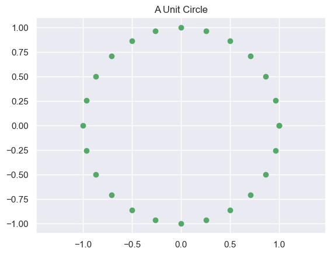
M = np.matrix([[2, 0],[0, 1]])
print('M'); print(M)M
[[2 0]
[0 1]]def plot_transformed_circle(X,NewX, title=None):
fig = plt.figure()
ax = fig.add_subplot(111)
plt.scatter(X[0].flat, X[1].flat, c='g')
plt.scatter(NewX[0].flat, NewX[1].flat, c='b')
plt.plot(X[0].flat, X[1].flat, color='g')
plt.plot(NewX[0].flat, NewX[1].flat, color='b')
if(title):
plt.title(title)
plt.axis('equal')
plt.show()
plot_transformed_circle(X, # First show the original circle
M*X) # Then show the transformed circle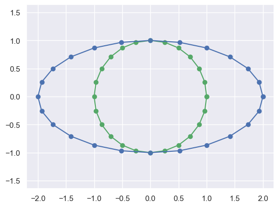
M = np.matrix([[2, 0],[0, 2]])
print('M'); print(M)
plot_transformed_circle(X,M*X)M
[[2 0]
[0 2]]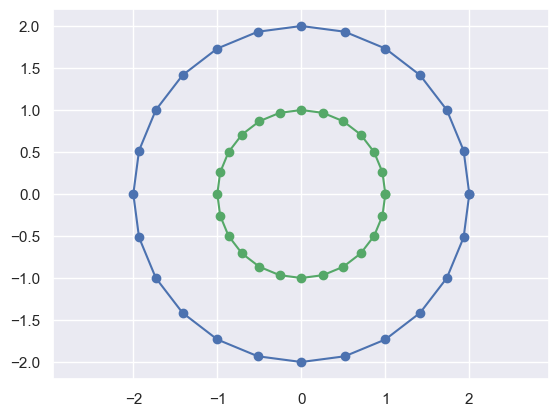
M = np.matrix([[1,2],[0, 1]])
print('M'); print(M)
plot_transformed_circle(X,M*X)M
[[1 2]
[0 1]]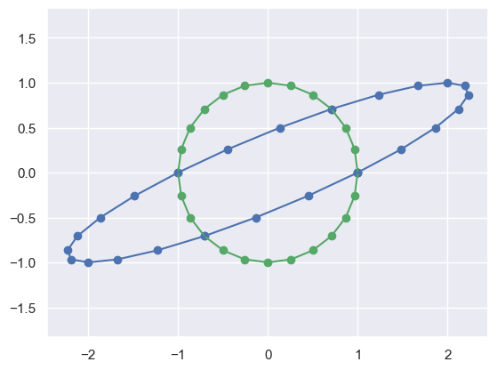
np.random.seed(100); np.set_printoptions(precision=1)
# Now just create a random 2x2 matrix
R = np.matrix(np.random.rand(2,2))
print(R)
# Then transform points by that matrix
NX = R*X
plot_transformed_circle(X,NX)[[0.5 0.3]
[0.4 0.8]]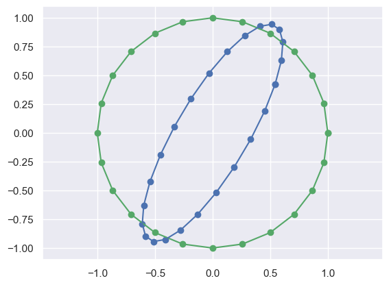
You can do this same thing to different dimensions of inputs, such as 1-D (lines):
X_line = np.linspace(-1,1,10) # Just create a 1-D set of points
print("X_line:\n",X_line)
R[:,0]*X_line # Convert it into
print("Transformed:\n",R[:,0]*X_line)
plot_transformed_circle(np.vstack([X_line,np.zeros_like(X_line)]),
R[:,0]*X_line)X_line:
[-1. -0.8 -0.6 ... 0.6 0.8 1. ]
Transformed:
[[-0.5 -0.4 -0.3 ... 0.3 0.4 0.5]
[-0.4 -0.3 -0.2 ... 0.2 0.3 0.4]]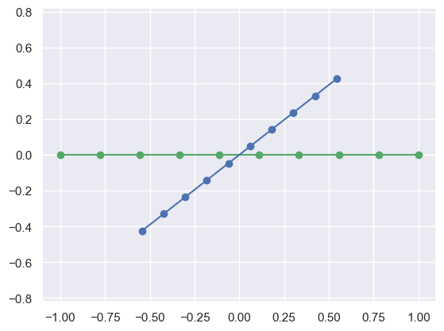
D The Singular Value Decomposition
For \(N\) data points of \(d\) dimensions: \[ X_{d\times N} = U_{d\times d} \Sigma_{d\times N} V^*_{N\times N} \] Where \(U\), \(V\) are orthogonal (\(UU^T=I\)), and \(\Sigma\) is diagonal.
NXmatrix([[ 0.5, 0.6, 0.6, ..., 0.3, 0.5, 0.5],
[ 0.4, 0.6, 0.8, ..., -0.1, 0.2, 0.4]])U,s,V = np.linalg.svd(NX,full_matrices=False) # Why is this useful?
S = np.diag(s)
print('U:', U.shape)
print('S:', S.shape) # Why is this only 2x2, rather than 2x25?
print('V:', V.shape) # Why is this only 2x25, rather than 25x25?
print('S ='); print(S)
print('U*U.T ='); print(U*U.T)U: (2, 2)
S: (2, 2)
V: (2, 25)
S =
[[3.8 0. ]
[0. 1.1]]
U*U.T =
[[1. 0.]
[0. 1.]]Vmatrix([[-0.2, -0.2, -0.3, ..., -0. , -0.1, -0.2],
[ 0.2, 0.2, 0.1, ..., 0.3, 0.3, 0.2]])print('S ='); print(S)
# Allow me to plot multiple circles on one figure
def plot_ax(ax,X,title=None):
ax.scatter(X[0].flat, X[1].flat,c='g')
ax.set_xlim([-1.5, 1.5])
ax.set_ylim([-1.5, 1.5])
if(title):
plt.title(title)
fig = plt.figure()
plot_ax(fig.add_subplot(221, aspect='equal'), NX, 'Original Data')
plot_ax(fig.add_subplot(223, aspect='equal'), V, 'V')
plot_ax(fig.add_subplot(224, aspect='equal'), S*V, 'S*V')
plot_ax(fig.add_subplot(222, aspect='equal'), U*S*V, 'U*S*V')
plt.show() # Essentially a "Change of Basis"
# U and V are orthogonal matrices, so they just represent Rotations/ReflectionsS =
[[3.8 0. ]
[0. 1.1]]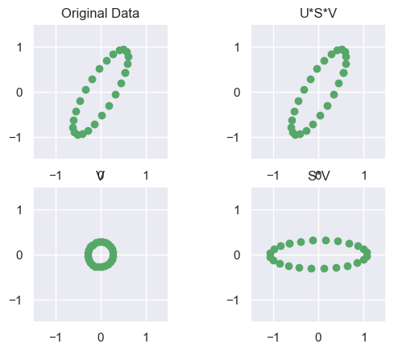
Y = circle_points(2,2/5) # Create points on a different ellipse
NY = R*Y # Transform those points with a matrix
plot_transformed_circle(Y,NY)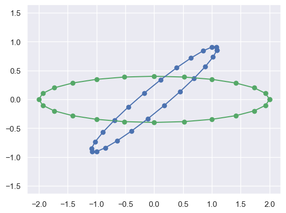
# Do the SVD
U,s,V = np.linalg.svd(NY,full_matrices=False)
S = np.diag(s); print('S ='); print(S)
# Plot the data and the various SVD transformations
fig = plt.figure()
plot_ax(fig.add_subplot(221, aspect='equal'), NY, 'Original Data')
plot_ax(fig.add_subplot(223, aspect='equal'), V, 'V')
plot_ax(fig.add_subplot(224, aspect='equal'), S*V, 'S*V')
plot_ax(fig.add_subplot(222, aspect='equal'), U*S*V, 'U*S*V')
plt.show()S =
[[5.1 0. ]
[0. 0.7]]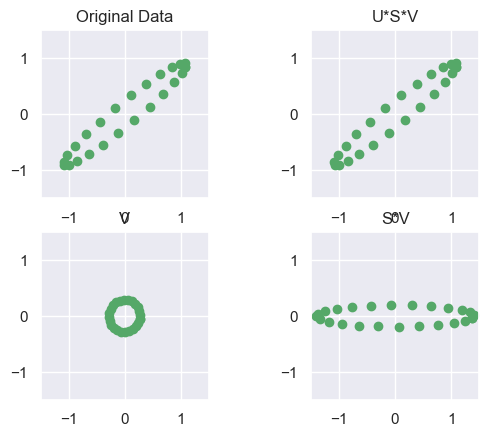
E What about different dimensions?
M = np.matrix([[1,0,],[0,1],[2,0.5]])
r = np.matrix([[1],[1]])
print(f"M = {M}")
print(f"r = {r}") # What are the dimensions of r?
print(f"M*r = {M*r}") # What are the dimensions of M*r?M = [[1. 0. ]
[0. 1. ]
[2. 0.5]]
r = [[1]
[1]]
M*r = [[1. ]
[1. ]
[2.5]]# Let's plot the points in 3D
def plot_3D_circle(X, elev=10., azim=50, title=None, c='b'):
"""
Plots 3D points from a (3, N) matrix X using matplotlib.
Parameters
----------
X : np.ndarray or np.matrix
3xN array of points to plot.
elev : float, optional
Elevation angle for the 3D plot.
azim : float, optional
Azimuth angle for the 3D plot.
title : str, optional
Title for the plot.
c : str, optional
Color for the points.
"""
fig = plt.figure()
ax = fig.add_subplot(111, projection='3d')
x = np.array(X[0]).flatten()
y = np.array(X[1]).flatten()
z = np.array(X[2]).flatten()
ax.scatter(x, y, z, c=c)
# Create cubic bounding box to simulate equal aspect ratio
max_range = np.array([x.max()-x.min(), y.max()-y.min(), z.max()-z.min()]).max()
Xb = 0.5*max_range*np.mgrid[-1:2:2,-1:2:2,-1:2:2][0].flatten() + 0.5*(x.max()+x.min())
Yb = 0.5*max_range*np.mgrid[-1:2:2,-1:2:2,-1:2:2][1].flatten() + 0.5*(y.max()+y.min())
Zb = 0.5*max_range*np.mgrid[-1:2:2,-1:2:2,-1:2:2][2].flatten() + 0.5*(z.max()+z.min())
for xb, yb, zb in zip(Xb, Yb, Zb):
ax.plot([xb], [yb], [zb], 'w')
ax.view_init(elev=elev, azim=azim)
if title:
plt.title(title)
plt.show()
def plot_3D_ax(ax, X, elev=10., azim=50, title=None,c='b'):
x = np.array(X[0].flat)
y = np.array(X[1].flat)
z = np.array(X[2].flat)
ax.scatter(x,y,z,c=c)
# Create cubic bounding box to simulate equal aspect ratio
max_range = np.array([x.max()-x.min(), y.max()-y.min(), z.max()-z.min()]).max()
Xb = 0.5*max_range*np.mgrid[-1:2:2,-1:2:2,-1:2:2][0].flatten() + 0.5*(x.max()+x.min())
Yb = 0.5*max_range*np.mgrid[-1:2:2,-1:2:2,-1:2:2][1].flatten() + 0.5*(y.max()+y.min())
Zb = 0.5*max_range*np.mgrid[-1:2:2,-1:2:2,-1:2:2][2].flatten() + 0.5*(z.max()+z.min())
# Comment or uncomment following both lines to test the fake bounding box:
for xb, yb, zb in zip(Xb, Yb, Zb):
ax.plot([xb], [yb], [zb], 'w')M = np.matrix([[1,0,],[0,1],[2,0.5]])
interactive_3D = lambda e,a: plot_3D_circle(M*X,elev=e,azim=a)
interact(interactive_3D, e=(0,90,30), a=(0,360,30))<function __main__.<lambda>(e, a)>M*Xmatrix([[ 1. , 1. , 0.9, ..., 0.9, 1. , 1. ],
[ 0. , 0.3, 0.5, ..., -0.5, -0.3, -0. ],
[ 2. , 2.1, 2. , ..., 1.5, 1.8, 2. ]])M = np.matrix([[1,2],[-2,2],[2,0.5]])
print(M)[[ 1. 2. ]
[-2. 2. ]
[ 2. 0.5]]interactive_3D = lambda e,a: plot_3D_circle(M*Y,elev=e,azim=a)
interact(interactive_3D, e=(0,90,30), a = (0,360,30))<function __main__.<lambda>(e, a)># M*Y is a 3D set of points
U,s,V = np.linalg.svd(M*Y,full_matrices=False)
S = np.diag(s)
print('U:', U.shape)
print('S:', S.shape)
print('V:', V.shape)
print('S =')
print(S)U: (3, 3)
S: (3, 3)
V: (3, 25)
S =
[[21.6 0. 0. ]
[ 0. 4. 0. ]
[ 0. 0. 0. ]]U*Smatrix([[ -7.1, 2.9, -0. ],
[ 14.5, 2.5, 0. ],
[-14.4, 1. , 0. ]])Vmatrix([[-0.3, -0.3, -0.2, ..., -0.2, -0.3, -0.3],
[ 0. , 0.1, 0.1, ..., -0.1, -0.1, 0. ],
[-0.8, 0.5, 0.1, ..., -0. , 0.1, 0. ]])fig = plt.figure()
plt.plot(np.diag(S),'o-')
plt.title("Magnitude of Singular Values")
plt.show()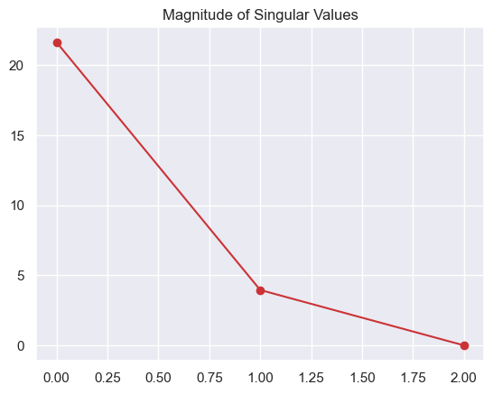
interactive_3D = lambda e,a: plot_3D_circle(V,elev=e,azim=a)
interact(interactive_3D, e=(0,90,30), a = (0,360,30))<function __main__.<lambda>(e, a)>interactive_3D = lambda e,a: plot_3D_circle(S*V,elev=e,azim=a)
interact(interactive_3D, e=(0,90,30), a = (0,360,30))
plt.show()interactive_3D = lambda e,a: plot_3D_circle(U*S*V,elev=e,azim=a)
interact(interactive_3D, e=(0,90,30), a = (0,360,30))<function __main__.<lambda>(e, a)>print('S ='); print(S)
print('V ='); print(V)
print('S*V ='); print(S*V)S =
[[21.6 0. 0. ]
[ 0. 4. 0. ]
[ 0. 0. 0. ]]
V =
[[-0.3 -0.3 -0.2 ... -0.2 -0.3 -0.3]
[ 0. 0.1 0.1 ... -0.1 -0.1 0. ]
[-0.8 0.5 0.1 ... -0. 0.1 0. ]]
S*V =
[[-6. -5.8 -5.1 ... -5.3 -5.8 -6. ]
[ 0. 0.3 0.6 ... -0.5 -0.3 0. ]
[-0. 0. 0. ... -0. 0. 0. ]]# So if V's 3rd row doesn't matter, why don't we just get rid of it?
Vt = V[0:2,:]
St = S[:,0:2]
print('St ='); print(St)
print('Vt ='); print(Vt)
print('St*Vt ='); print(St*Vt)St =
[[21.6 0. ]
[ 0. 4. ]
[ 0. 0. ]]
Vt =
[[-0.3 -0.3 -0.2 ... -0.2 -0.3 -0.3]
[ 0. 0.1 0.1 ... -0.1 -0.1 0. ]]
St*Vt =
[[-6. -5.8 -5.1 ... -5.3 -5.8 -6. ]
[ 0. 0.3 0.6 ... -0.5 -0.3 0. ]
[ 0. 0. 0. ... 0. 0. 0. ]]print('U ='); print(U)U =
[[-0.3 0.7 -0.6]
[ 0.7 0.6 0.4]
[-0.7 0.3 0.7]]# Truncate U. Now we have the "Truncated SVD"
Ut = U[:,0:2]
St = St[0:2,:]
print('Ut ='); print(Ut)
print('St ='); print(St)
print('Vt ='); print(Vt)Ut =
[[-0.3 0.7]
[ 0.7 0.6]
[-0.7 0.3]]
St =
[[21.6 0. ]
[ 0. 4. ]]
Vt =
[[-0.3 -0.3 -0.2 ... -0.2 -0.3 -0.3]
[ 0. 0.1 0.1 ... -0.1 -0.1 0. ]]print('Ut*St*Vt ='); print(Ut*St*Vt) # Even though we threw away info...
print('M*Y = '); print(M*Y)
print("Are they equal?: ", np.allclose(M*Y,Ut*St*Vt))Ut*St*Vt =
[[ 2. 2.1 2.1 ... 1.3 1.7 2. ]
[-4. -3.7 -3.1 ... -3.9 -4.1 -4. ]
[ 4. 3.9 3.6 ... 3.4 3.8 4. ]]
M*Y =
[[ 2. 2.1 2.1 ... 1.3 1.7 2. ]
[-4. -3.7 -3.1 ... -3.9 -4.1 -4. ]
[ 4. 3.9 3.6 ... 3.4 3.8 4. ]]
Are they equal?: Trueprint(Vt)
plot_circle(Vt) # The actual basis which preserves data variability[[-0.3 -0.3 -0.2 ... -0.2 -0.3 -0.3]
[ 0. 0.1 0.1 ... -0.1 -0.1 0. ]]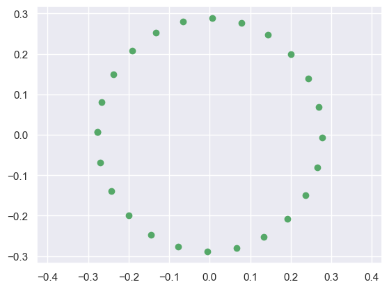
# Let's make things more difficult - add some noise:
Z = M*X + np.random.normal(0,0.5,size=(M*X).shape)
interactive_3D = lambda e,a: plot_3D_circle(Z,elev=e,azim=a)
interact(interactive_3D, e=(0,90,30), a = (0,360,30))<function __main__.<lambda>(e, a)>Ue,se,Ve = np.linalg.svd(Z,full_matrices=False)
Se = np.diag(se)
print('S ='); print(Se) # What is different, compared to no-noise?S =
[[11.5 0. 0. ]
[ 0. 9.7 0. ]
[ 0. 0. 2.8]]# Truncate:
Uet = Ue[:,0:2]
Set = Se[0:2,0:2]
Vet = Ve[0:2,:]
print(Z); print(); print(Uet*Set*Vet)[[ 1.5 1.7 2. ... 0.2 1.1 0.8]
[-2. -1.3 -1.5 ... -3. -2.9 -2.4]
[ 2.1 2.3 1.6 ... 1.9 1.1 2.3]]
[[ 1.3 1.7 1.5 ... 0.2 0.5 0.9]
[-1.9 -1.3 -1.2 ... -3. -2.5 -2.5]
[ 2.3 2.3 2. ... 1.9 1.9 2.2]]print("Are they equal?: ", np.allclose(Z,Uet*Set*Vet)) # We lost infoAre they equal?: Falsex = np.arange(-.2,.3,.05)
y = np.arange(-.6,.6,.1)
vep = np.matrix(np.transpose([np.tile(x, len(y)), np.repeat(y, len(x))]))
Zt = Uet*Set*vep.T
#Zt = Uet*Set*Vet
def compare_3D(Z, Zt, elev=10., azim=50):
"""
Plots two sets of 3D points for visual comparison.
Parameters
----------
Z : np.ndarray or np.matrix
Original 3D data (shape: 3 x N).
Zt : np.ndarray or np.matrix
Transformed 3D data (shape: 3 x N).
elev : float, optional
Elevation angle for the 3D plot.
azim : float, optional
Azimuth angle for the 3D plot.
"""
fig = plt.figure()
ax = fig.add_subplot(111, projection='3d')
# Ensure shapes are (3, N)
Z = np.asarray(Z)
Zt = np.asarray(Zt)
# If Zt is 2D, pad with zeros for 3D visualization
if Zt.shape[0] == 2:
Zt = np.vstack([Zt, np.zeros(Zt.shape[1])])
ax.scatter(Z[0], Z[1], Z[2], c='b', label='Original')
ax.scatter(Zt[0], Zt[1], Zt[2], c='g', label='Transformed')
ax.view_init(elev=elev, azim=azim)
ax.set_xlabel('X')
ax.set_ylabel('Y')
ax.set_zlabel('Z')
ax.legend()
plt.tight_layout()
plt.show()interactive_3D = lambda e,a: compare_3D(Z,Zt,elev=e,azim=a)
interact(interactive_3D, e=(0,90,30), a = (0,360,30))<function __main__.<lambda>(e, a)>The idea of uncovering structure, or reducing data-dimensions is one key goal of Unsupervised Learning. In particular, the SVD (among other methods) can be used for Principal Component Analysis: reducing the number of dimensions of a data-set, by finding a linear transformation to a smaller orthogonal basis which minimizes reconstruction error to the original space.
from sklearn.decomposition import PCA
pcaY = PCA(n_components=2).fit_transform(np.asarray(Z).T)
pcaY = np.array([[-.1,0],[0,-.1]])@pcaY.T # Some scaling/flipping
fig = plt.figure()
plot_ax(fig.add_subplot(121, aspect='equal'), 4*pcaY, 'PCA')
plot_ax(fig.add_subplot(122, aspect='equal'), 4*Vet, 'SVD')
plt.show()
# Note: result is (essentially) identical to PCA (up to scale/flipped axes)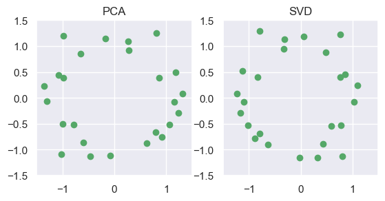